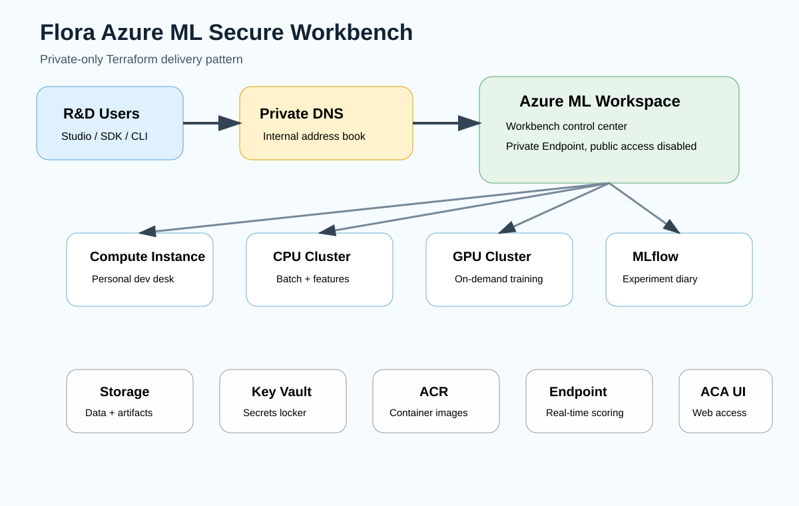
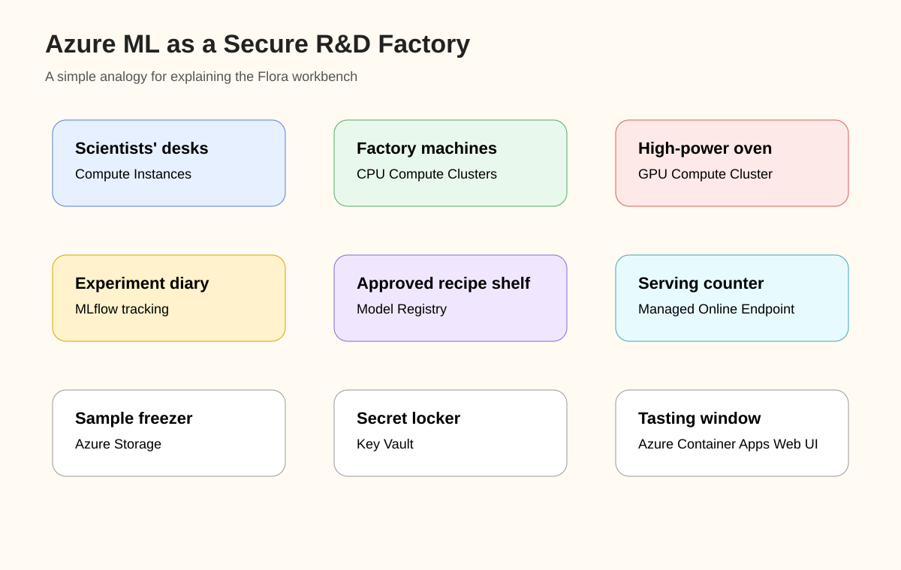
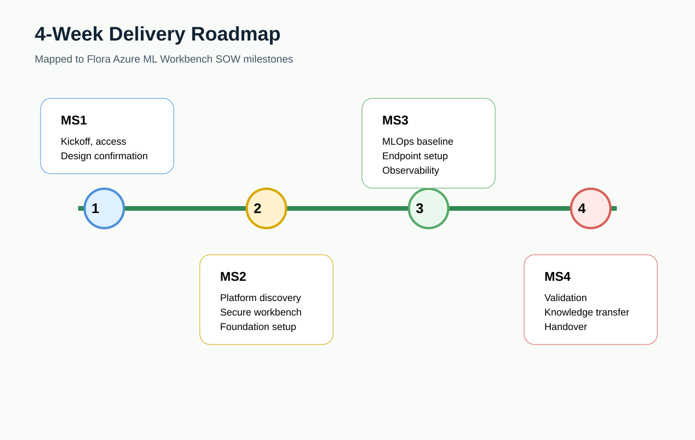

Secure workbench

Azure ML, Terraform, DevOps, private networking, MLOps
This page converts the Azure ML Workbench SOW into a practical delivery bootcamp. The goal is to design, deploy, validate, explain, and hand over a secure Azure ML workbench.
Start lessonsDownload PPTXMarkdown packVisuals



You do not need to become a data scientist. You need to become strong enough to deliver the platform: workspace, private networking, compute, tracking, registry, endpoint, web UI, DevOps, monitoring, and handover.
Target architecture
R&D Users
|
v
Private DNS
|
+-- Azure ML Studio
| |
| v
| Azure ML Workspace
| +-- Compute Instance
| +-- CPU Compute Cluster
| +-- GPU Compute Cluster
| +-- MLflow Tracking
| +-- Model Registry
| +-- Managed Online Endpoint
|
+-- Azure Container Apps Web UI
|
v
Managed Online EndpointLearning path
Azure ML is an enterprise ML platform, not just a notebook tool.
Terraform-built, private-only workbench with endpoint and controlled web UI access.
Acceptance requires platform, MLOps, endpoint, web UI, pipeline, and monitoring evidence.
Terraform builds the factory. Azure ML CLI or SDK runs the factory.
Compute Instance is the personal desk. CPU cluster is shared machinery. GPU cluster is the expensive machine.
MLflow tracks experiments. Registry versions models. Endpoint serves predictions.
The web UI is a controlled access layer to consume the model endpoint.
Close with proof: jobs, models, endpoints, web UI, logs, pipeline, and runbook.
Workspace is the control room. Storage, Key Vault, ACR, monitoring, Private Endpoints, and DNS make it usable.
Use min nodes zero, constrained GPU scale, idle shutdown, quota validation, and tags.
Lesson 10
Personal development desk for notebooks, debugging, and small experiments. Control it with idle shutdown and modest sizing.
Default engine for feature engineering, classical training, batch scoring, and pipeline steps. Start with min 0 and max 2 or 4.
Use only for real GPU need. Start with min 0 and max 1. Validate quota and regional capacity early.
min_instances = 0 means no job, no running nodes. min_instances greater than 0 means nodes keep running even when idle.
| Control | Why it matters |
|---|---|
| Cluster minimum nodes set to 0 | Stops paying for idle training nodes |
| GPU maximum nodes kept low | Prevents accidental expensive scale-out |
| Idle shutdown for compute instances | Prevents cloud laptop cost leakage |
| Quota validation early | Avoids delivery blockers during testing |
| Tags on all compute | Supports cost reporting and ownership |
Workspace internals
Architect warning: Workspace opening in Studio does not prove readiness. A full job must run, pull image, write output, register model, deploy endpoint, serve prediction, and emit logs.
Handover